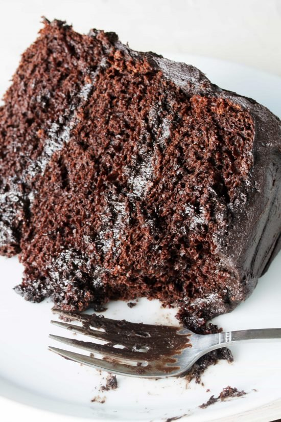

The Most Amazing Chocolate Cake

Description
The Most Amazing Chocolate Cake is full of moist, chocolatey perfection. This is the chocolate cake you’ve been dreaming of!
Ingredients
- 3 cups all-purpose flour
- 3 cups granulated sugar
- 1 1/2 cups unsweetened cocoa powder
- 1 tablespoon baking soda
- 1 1/2 teaspoons baking powder
- 1 1/2 teaspoons salt
- 4 large eggs
- 1 1/2 cups buttermilk
- 1 1/2 cups warm water
- 1/2 cup vegetable oil
- 2 teaspoons vanilla extract
Steps
- Preheat oven to 350 degrees Fahrenheit. Butter three 9-inch cake rounds. Dust with flour and tap out the excess.
- Mix together flour, sugar, cocoa, baking soda, baking powder, and salt in a stand mixer using a low speed until combined.
- Add eggs, buttermilk, warm water, oil, and vanilla. Beat on a medium speed until smooth. This should take just a couple of minutes.
- Divide batter among the three pans. I found that it took just over 3 cups of the batter to divide it evenly.
- Bake for 30-35 minutes in a 350 degree oven until a toothpick inserted into the center comes out clean.
- Cool on wire racks for 15 minutes and then turn out the cakes onto the racks and allow to cool completely.
- Frost with your favorite frosting and enjoy!